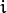
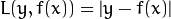
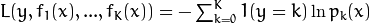
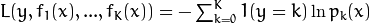

Gradient Boosted Trees¶
Gradient Boosted Trees (GBT) is a generalized boosting algorithm introduced by Jerome Friedman: http://www.salfordsystems.com/doc/GreedyFuncApproxSS.pdf . In contrast to the AdaBoost.M1 algorithm, GBT can deal with both multiclass classification and regression problems. Moreover, it can use any differential loss function, some popular ones are implemented. Decision trees (CvDTree) usage as base learners allows to process ordered and categorical variables.
Training the GBT model¶
Gradient Boosted Trees model represents an ensemble of single regression trees built in a greedy fashion. Training procedure is an iterative process similar to the numerical optimization via the gradient descent method. Summary loss on the training set depends only on the current model predictions for the training samples, in other words . And the gradient can be computed as follows:
At every training step, a single regression tree is built to predict an antigradient vector components. Step length is computed corresponding to the loss function and separately for every region determined by the tree leaf. It can be eliminated by changing values of the leaves directly.
See below the main scheme of the training process:
- Find the best constant model.
- For  in :
- Compute the antigradient.
- Grow a regression tree to predict antigradient components.
- Change values in the tree leaves.
- Add the tree to the model.
The following loss functions are implemented for regression problems:
Squared loss (CvGBTrees::SQUARED_LOSS):
Absolute loss (CvGBTrees::ABSOLUTE_LOSS): 
Huber loss (CvGBTrees::HUBER_LOSS): ,
where is the
 -quantile estimation of the
. In the current implementation .
-quantile estimation of the
. In the current implementation .
The following loss functions are implemented for classification problems:
- Deviance or cross-entropy loss (CvGBTrees::DEVIANCE_LOSS):
 functions are built, one function for each output class, and
,
where
is the estimation of the probability of .
functions are built, one function for each output class, and
,
where
is the estimation of the probability of .
As a result, you get the following model:
where is the initial guess (the best constant model) and  is a regularization parameter from the interval
is a regularization parameter from the interval ![(0,1]](../../../_images/math/101678300d1aa11009468da8419aaf2c57b795bd.png) , further called
shrinkage.
, further called
shrinkage.
Predicting with the GBT Model¶
To get the GBT model prediction, you need to compute the sum of responses of
all the trees in the ensemble. For regression problems, it is the answer.
For classification problems, the result is  .
.
CvGBTreesParams¶
- struct CvGBTreesParams : public CvDTreeParams¶
GBT training parameters.
The structure contains parameters for each single decision tree in the ensemble, as well as the whole model characteristics. The structure is derived from CvDTreeParams but not all of the decision tree parameters are supported: cross-validation, pruning, and class priorities are not used.
CvGBTreesParams::CvGBTreesParams¶
- C++: CvGBTreesParams::CvGBTreesParams()¶
- C++: CvGBTreesParams::CvGBTreesParams(int loss_function_type, int weak_count, float shrinkage, float subsample_portion, int max_depth, bool use_surrogates)¶
Parameters: - loss_function_type – Type of the loss function used for training (see Training the GBT model). It must be one of the following types: CvGBTrees::SQUARED_LOSS, CvGBTrees::ABSOLUTE_LOSS, CvGBTrees::HUBER_LOSS, CvGBTrees::DEVIANCE_LOSS. The first three types are used for regression problems, and the last one for classification.
- weak_count – Count of boosting algorithm iterations. weak_count*K is the total count of trees in the GBT model, where K is the output classes count (equal to one in case of a regression).
- shrinkage – Regularization parameter (see Training the GBT model).
- subsample_portion – Portion of the whole training set used for each algorithm iteration. Subset is generated randomly. For more information see http://www.salfordsystems.com/doc/StochasticBoostingSS.pdf.
- max_depth – Maximal depth of each decision tree in the ensemble (see CvDTree).
- use_surrogates – If true, surrogate splits are built (see CvDTree).
By default the following constructor is used:
CvGBTreesParams(CvGBTrees::SQUARED_LOSS, 200, 0.8f, 0.01f, 3, false)
: CvDTreeParams( 3, 10, 0, false, 10, 0, false, false, 0 )
CvGBTrees¶
- class CvGBTrees : public CvStatModel¶
The class implements the Gradient boosted tree model as described in the beginning of this section.
CvGBTrees::CvGBTrees¶
Default and training constructors.
- C++: CvGBTrees::CvGBTrees()¶
- C++: CvGBTrees::CvGBTrees(const Mat& trainData, int tflag, const Mat& responses, const Mat& varIdx=Mat(), const Mat& sampleIdx=Mat(), const Mat& varType=Mat(), const Mat& missingDataMask=Mat(), CvGBTreesParams params=CvGBTreesParams() )¶
- C++: CvGBTrees::CvGBTrees(const CvMat* trainData, int tflag, const CvMat* responses, const CvMat* varIdx=0, const CvMat* sampleIdx=0, const CvMat* varType=0, const CvMat* missingDataMask=0, CvGBTreesParams params=CvGBTreesParams() )¶
- Python: cv2.GBTrees([trainData, tflag, responses[, varIdx[, sampleIdx[, varType[, missingDataMask[, params]]]]]]) → <GBTrees object>¶
The constructors follow conventions of CvStatModel::CvStatModel(). See CvStatModel::train() for parameters descriptions.
CvGBTrees::train¶
Trains a Gradient boosted tree model.
- C++: bool CvGBTrees::train(const Mat& trainData, int tflag, const Mat& responses, const Mat& varIdx=Mat(), const Mat& sampleIdx=Mat(), const Mat& varType=Mat(), const Mat& missingDataMask=Mat(), CvGBTreesParams params=CvGBTreesParams(), bool update=false)¶
- C++: bool CvGBTrees::train(const CvMat* trainData, int tflag, const CvMat* responses, const CvMat* varIdx=0, const CvMat* sampleIdx=0, const CvMat* varType=0, const CvMat* missingDataMask=0, CvGBTreesParams params=CvGBTreesParams(), bool update=false )¶
- C++: bool CvGBTrees::train(CvMLData* data, CvGBTreesParams params=CvGBTreesParams(), bool update=false)¶
- Python: cv2.GBTrees.train(trainData, tflag, responses[, varIdx[, sampleIdx[, varType[, missingDataMask[, params[, update]]]]]]) → retval¶
The first train method follows the common template (see CvStatModel::train()). Both tflag values (CV_ROW_SAMPLE, CV_COL_SAMPLE) are supported. trainData must be of the CV_32F type. responses must be a matrix of type CV_32S or CV_32F. In both cases it is converted into the CV_32F matrix inside the training procedure. varIdx and sampleIdx must be a list of indices (CV_32S) or a mask (CV_8U or CV_8S). update is a dummy parameter.
The second form of CvGBTrees::train() function uses CvMLData as a data set container. update is still a dummy parameter.
All parameters specific to the GBT model are passed into the training function as a CvGBTreesParams structure.
CvGBTrees::predict¶
Predicts a response for an input sample.
- C++: float CvGBTrees::predict(const Mat& sample, const Mat& missing=Mat(), const Range& slice=Range::all(), int k=-1) const¶
- C++: float CvGBTrees::predict(const CvMat* sample, const CvMat* missing=0, CvMat* weakResponses=0, CvSlice slice=CV_WHOLE_SEQ, int k=-1 ) const¶
- Python: cv2.GBTrees.predict(sample[, missing[, slice[, k]]]) → retval¶
Parameters: - sample – Input feature vector that has the same format as every training set element. If not all the variables were actually used during training, sample contains forged values at the appropriate places.
- missing – Missing values mask, which is a dimensional matrix of the same size as sample having the CV_8U type. 1 corresponds to the missing value in the same position in the sample vector. If there are no missing values in the feature vector, an empty matrix can be passed instead of the missing mask.
- weakResponses – Matrix used to obtain predictions of all the trees.
The matrix has rows,
where is the count of output classes (1 for the regression case).
The matrix has as many columns as the slice length.
- slice – Parameter defining the part of the ensemble used for prediction. If slice = Range::all(), all trees are used. Use this parameter to get predictions of the GBT models with different ensemble sizes learning only one model.
- k – Number of tree ensembles built in case of the classification problem (see Training the GBT model). Use this parameter to change the output to sum of the trees’ predictions in the k-th ensemble only. To get the total GBT model prediction, k value must be -1. For regression problems, k is also equal to -1.
The method predicts the response corresponding to the given sample (see Predicting with the GBT Model). The result is either the class label or the estimated function value. The CvGBTrees::predict() method enables using the parallel version of the GBT model prediction if the OpenCV is built with the TBB library. In this case, predictions of single trees are computed in a parallel fashion.
CvGBTrees::clear¶
Clears the model.
- C++: void CvGBTrees::clear()¶
- Python: cv2.GBTrees.clear() → None¶
The function deletes the data set information and all the weak models and sets all internal variables to the initial state. The function is called in CvGBTrees::train() and in the destructor.
CvGBTrees::calc_error¶
Calculates a training or testing error.
- C++: float CvGBTrees::calc_error(CvMLData* _data, int type, std::vector<float>* resp=0 )¶
Parameters: - _data – Data set.
- type – Parameter defining the error that should be computed: train (CV_TRAIN_ERROR) or test (CV_TEST_ERROR).
- resp – If non-zero, a vector of predictions on the corresponding data set is returned.
If the CvMLData data is used to store the data set, CvGBTrees::calc_error() can be used to get a training/testing error easily and (optionally) all predictions on the training/testing set. If the Intel* TBB* library is used, the error is computed in a parallel way, namely, predictions for different samples are computed at the same time. In case of a regression problem, a mean squared error is returned. For classifications, the result is a misclassification error in percent.
Help and Feedback
You did not find what you were looking for?- Ask a question on the Q&A forum.
- If you think something is missing or wrong in the documentation, please file a bug report.